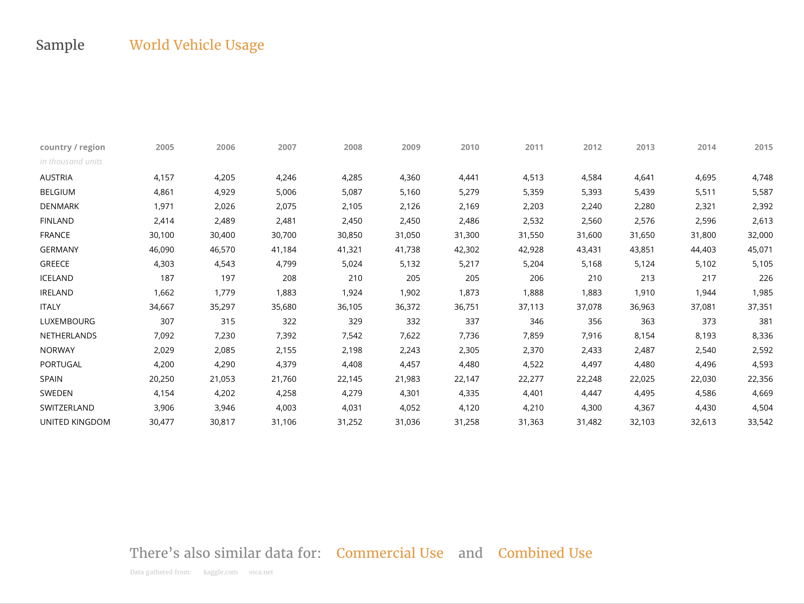

International Car Sales
Which country is sucessfully reducing the amount of cars on its roads? The International Car Sales visualization offers insights into global production and sales trends.
Problem
The harm of certain travel methods has been emphasised by environmental initiatives that encourage alternative options. However, there is very little insight regarding the effectiveness of these initiatives in the real world. The goal of this project was to provide visualized proof of that effectiveness, reflecting how well each country is answering the call for change, in a comprehensive and narrative driven way.
How do we know who is listening to the call for alternative transportation intiatives?
Outcome
It turns out there is a lot of raw data available on vehicle sales and production numbers for every country. It gave me the opportunity to filter this raw information into a clear and comprehesive visualization, which allows users to track and compare each countries vehicle habits.
Research
The main component of this project was detailed and accurate data upon which an insightful visualization could be built. I spent a good portion of my time searching and analyzing various databases in order to get an idea of what variables were available to compare. I sifted through large vehicle datasets and eventually found production and sales data that gave me a clear picture of industry trends.
Approach
My solution to the lack of insight into how our countries are responding to the personal vehicle was to tell a story. I believe some data can be presented as a visualization that speaks for itself, however other sets require the additional support of context. Keeping this in mind, as I developed ideas for the project I attempted to generate a narrative which would guide the user through the site and help them gain context into the data they would ultimately be viewing.
Tell them a story.
Takeaway
The pacing of data is just as important as its appearance.
There are some visualizations that can stand alone and speak for themselves just fine, but there are many others which could benefit greatly from the context only a narrative can provide. Taking the time to consider if your data needs help being understood before visualizing it is an important step in making it accesible and comprehesive.